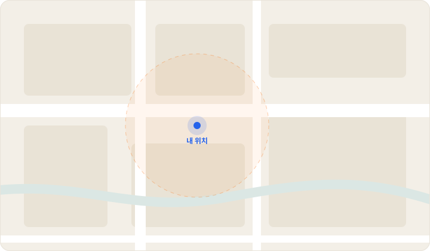

일하다 말고 메뉴 회의
집중해서 일하다가도 단톡방 알림에 손을 멈추게 됩니다.
BETA OPEN · 메뉴 회의 없는 점심시간을 만드는 중
점심시간은 짧고, 의견은 많죠. 모두가 망설이는 순간 오늘은 뭐먹지가 첫 선택지를 던져드릴게요.
필요한 의견만, 목적을 안내한 뒤 수집합니다.
TODAY'S RANDOM MENU
오늘은 이 메뉴 어때요?
마음에 들지 않으면, 다시 한 번 뽑아보세요.
랜덤 메뉴 뽑기는 우리 서비스의 간단 체험입니다.
어떤 사무실은 이미
11시 30분에 정하고,
11시 31분에 나갑니다
같은 점심시간인데 누구는 30분을 회의하고, 누구는 바로 일어섭니다. 차이는 입맛이 아니라 정하는 방식이었습니다.
물음표만 올라오고 아무도 안 정해요. 일하다 말고 지도 앱을 뒤지고, 겨우 생긴 쉬는 시간은 메뉴 회의로 사라집니다. 그러다 12시가 되고, 결국 늘 가던 그 집으로 갑니다.
집중해서 일하다가도 단톡방 알림에 손을 멈추게 됩니다.
서로 배려하다 아무도 못 정하고, 쉬는 시간만 그대로 사라져요.
블로그·지도를 뒤져도 뭐가 진짜 괜찮은 집인지 알기 어렵습니다.
새로 생긴 가게가 궁금해도, 실패가 무서워 익숙한 곳을 고릅니다.
그리고 우리 모두, 사실은
가끔은 그냥, 누가 딱 정해줬으면 싶잖아요.
그 시간, 대부분 업무 시간과 쉬는 시간에서 빠져나갑니다
업무 중 메뉴 정하는 시간
쉬는 시간에 가게 찾는 시간
이제 정하는 시간
업무 흐름 끊지 않고 3초 만에 정하세요. 쉬는 시간은 쉬는 데 쓰고, 메뉴도 가게도 저희가 골라드릴게요.
버튼 한 번이면 회사 근처에서 갈 만한 가게를 뽑아드려요. 단톡방에 공유하면 그걸로 끝납니다.
뽑힌 가게는 자동으로 기록돼요. 다음 추천부터는 최근에 간 곳을 빼고 골라서, 같은 집이 연달아 나오지 않습니다.
기록은 내 기기에만 저장되고, 언제든 지울 수 있어요.
OUR CONCEPT
고민을 줄여주는 앱이 아니라, 고민을 끝내주는 앱
메뉴를 더 많이 보여드리지 않습니다. 딱 하나만 정해서 보여드립니다. 선택지를 늘리는 게 아니라 하나로 좁히는 것, 그게 저희 컨셉입니다.
고민 없이 바로
입력도 필터도 없습니다. 버튼만 누르면 끝이라 업무 흐름이 끊기지 않아요.
회사 근처만
점심시간에 다녀올 수 있는 거리만 추천해요. 배달이 아니라 나가서 먹는 기준입니다.
공유로 끝
결과 링크를 단톡방에 넘기면 눈치 게임도 같이 끝납니다.
메뉴를 정하는 게 어려운 진짜 이유는 선택지가 많아서가 아니라, “지금 여기서 갈 수 있는 곳”이 어디인지 몰라서입니다. 그래서 저희는 위치를 기준으로 답을 좁힙니다.

핀이나 가게 이름을 누르면 정보가 열려요.
점심시간은 한 시간뿐입니다. 아무리 좋은 집이어도 왕복 40분이면 후보가 될 수 없어요. 그래서 반경 안, 걸어서 다녀올 수 있는 거리만 후보로 둡니다. 추천받고 시간을 계산할 필요가 없습니다.
블로그 상위 노출은 대부분 광고입니다. 저희는 순위를 매기지 않고 지금 내 위치를 기준으로 실제 영업 중인 가게를 불러옵니다. 순위가 아니라 거리와 지금이라는 기준으로 좁힙니다.
목록을 열 개 보여주면 고민은 다시 시작됩니다. 그래서 좁힌 후보 중에서 딱 한 곳만 지도에 찍어드립니다. 화면에 남는 건 가게 하나, 거리 하나, 그리고 단톡방에 넘길 링크 하나입니다.
위치를 알면 고민할 거리 자체가 줄어듭니다.
그게 저희가 위치 기반을 고른 이유입니다.
위치 기반 서비스가 실제로 어떻게 동작하는지, 4단계로 보여드릴게요.
브라우저가 현재 위치를 알려줍니다. 주소를 입력할 필요도, 회원가입을 할 필요도 없습니다.
Geolocation API그 좌표를 기준으로 반경 500m 안의 음식점을 지도 서비스에 요청합니다. 점심시간에 다녀올 수 있는 거리만 봅니다.
네이버 지도 · 공공데이터 상가정보 API받아온 목록을 다 보여주지 않습니다. 그중 한 곳만 뽑아서 결정을 대신 내려드립니다. 고민할 거리를 남기지 않는 게 핵심입니다.
랜덤 선택 로직가게 위치에 마커를 찍고 이름·거리·상세 링크를 띄웁니다. 그 링크를 단톡방에 넘기면 점심 회의가 끝납니다.
지도 마커 · 링크 공유입력 한 번 없이, 여기까지 3초. 이게 저희가 만든 점심 정하는 방식입니다.
혼자 먹는 날, 팀이 같이 가는 날, 비 오는 날, 회식 날까지. 상황이 달라도 정하는 건 여전히 3초입니다.
팀원 식이 조건을 한 번만 넣어두세요. 알레르기 정보가 확인되지 않은 식당은 그 조건의 추천에서 알아서 빠집니다. 메뉴판 앞에서 서로 눈치 볼 일이 없어요.
“저 갑각류 안 되는데요…” 이 말, 이제 식당 앞에서 안 나옵니다.
오늘 날씨를 불러와서 추천에 살짝 반영해요. 비 오는 날엔 국물, 폭염엔 시원한 쪽으로. 날씨 정보를 못 불러오면 억지로 맞추지 않고 평소처럼 뽑습니다.
우산 없이 15분 걸어가는 점심은 이제 그만.
1차와 2차 후보를 나란히 놓고 비교해서 동선까지 이어 드려요. 끝나면 실제 참여자와 결제 금액을 넣어 정산까지 마무리합니다.
다음 날 아침 “어제 누가 얼마 냈더라?” 추리 게임 종료.
그럼 이건 어떻게 동작하냐면요
1차에서 고기 먹고 나왔는데 2차 장소로 또 20분 회의? 그 20분을 없애는 흐름입니다.
인원·예산 입력
몇 명이 가는지, 1인당 얼마까지인지 두 칸만 채워요.
1차 한 곳 뽑기
회사 반경 안에서 인원이 앉을 수 있는 가게 중 한 곳을 골라요.
2차 짝 맞추기
1차 가게에서 걸어서 5분 안, 1차와 종류가 다른 곳을 2차 후보로 붙여요.
참여자·금액으로 정산
실제 온 사람과 결제 금액을 넣으면 1/N이 바로 나와요.
고기 → 고기처럼 같은 종류가 연달아 나오지 않게, 1차 카테고리는 2차 후보에서 뺍니다.
메뉴판 앞에서 "저 이거 못 먹어요"가 나오기 전에, 후보 단계에서 미리 거릅니다.
참여자 체크
오늘 같이 가는 사람을 고르면 저장해 둔 식이 조건을 불러와요.
조건 모으기
채식·갑각류·견과류처럼 한 명이라도 걸리는 조건을 전부 합쳐요.
가게 태그와 비교
가게 정보에 적힌 알레르기·메뉴 태그와 하나씩 맞춰 봐요.
모르면 빼기
정보가 확인되지 않은 가게는 "괜찮겠지"로 넣지 않고 그 조건에선 제외해요.
"아마 괜찮을 거야"는 추천하지 않습니다. 확인된 곳만 남기는 게 원칙이에요.
비 오는 날 15분 걸어가서 냉면 먹는 일, 이제 없어요.
날씨 불러오기
공공데이터포털 기상청 단기예보로 지금 비·기온을 가져와요.
오늘 날씨 분류
비 / 폭염 / 한파 / 보통 중 하나로 나눠요.
가중치 주기
비엔 국물·가까운 곳, 폭염엔 시원한 메뉴 쪽에 확률을 조금 더 줘요.
그래도 랜덤
가중치를 줘도 뽑기는 랜덤이라, 매일 칼국수만 나오진 않아요.
날씨를 못 불러오면 억지로 맞추지 않고, 가중치 없이 평소처럼 뽑습니다.
다음 업데이트에는 랜덤 요소의 재미를 살린 엔터테인먼트적 기능이 추가될 예정입니다.
사다리에 메뉴 후보나 메뉴를 선정할 사람을 넣어 오늘의 메뉴를 결정합니다.
주사위를 여러 번 굴려 높은 숫자를 가진 사람이 메뉴를 정합니다. 링크로 친구에게 승부를 걸어보세요.
근처 식당 정보를 가져와 최후의 후보 공 하나가 남을 때까지 핀볼을 진행합니다.
미리보기 버튼을 눌러 각 기능의 간단한 게임 화면을 확인해 보세요.
지금 이 링크를 통해 베타 서비스에 참여하면, 정식 출시 후 3개월 프리미엄 무료 이용권을 드립니다.
이 페이지의 베타 전용 링크를 통해 곧바로 서비스를 이용해 보세요.
이 링크로만 가능내 주변 맛집 찾기, 랜덤 메뉴 선정, 최적의 회식 장소 찾기 기능을 제한 없이 이용하세요.
모든 기능 이용사용 경험을 솔직하게 남겨주세요. 좋았던 점과 불편했던 점 모두 서비스 개선에 활용됩니다.
약 5분 소요후기 작성자를 대상으로 이벤트 혜택을 안내합니다. 자세한 선정 기준과 지급 방식은 운영 정책 확정 후 공지됩니다.
이벤트 혜택 안내좋았던 점과 불편했던 점 모두 서비스 개선에 활용됩니다.